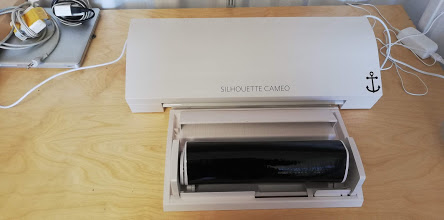
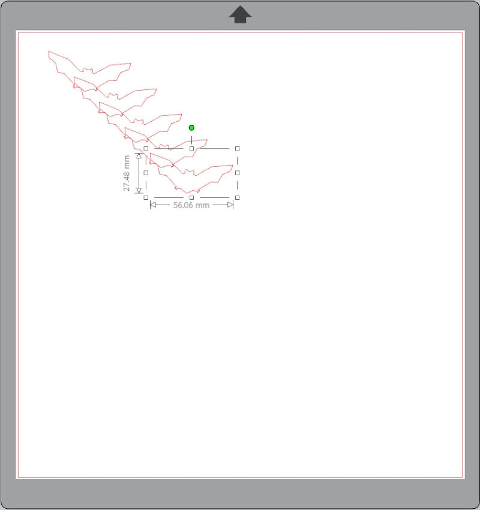
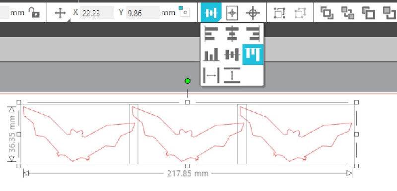
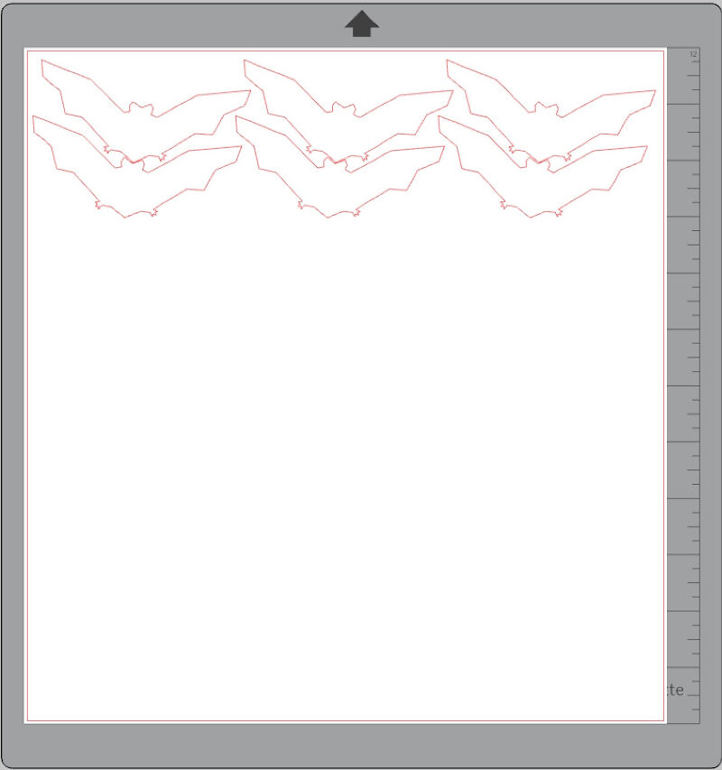

Computer-Controlled Cutting
Group Assignment
- characterize your lasercutter's focus, power, speed, rate, kerf, and joint clearance
- document your work (individually or in group)
Individual assignment
- Design, lasercut, and document a parametric press-fit construction kit, which can be assembled in multiple ways. Account for the lasercutter kerf.
Learning outcomes:
- Demonstrate and describe parametric 2D modeling processes
- Identify and explain processes involved in using the laser cutter.
- Develop, evaluate and construct the parametric construction kit
Have you:
- linked to the group assignment page
- Explained how you parametrically designed your files
- Documented how you made your press-fit kit
- Included your hero shots
Vinyl Cutting
Individual assignment
- cut something on the vinylcutter
Learning outcomes:
- Identify and explain processes involved in using the vinyl cutter.
Have you:
- Documented how you made your vinyl cutting
- Included your original design files
- Included your hero shots
Index
Week work-flow
Tools used
Software Used
Introduction
On this assignment I was going to be using a 3dprinter I designed and made and then I upgraded it with a 2 watts diode laser. But I ended up designing and making a co2 laser cutter
I will be testing its capabilities and testing it to its limits in other to have a better understand of its capabilities and limitations. On the Vinyl side of the assignment I will be using a Silhouette Cameo and document its results.


Group Assignment
check http://academany.fabcloud.io/fabacademy/2020/labs/barcelona/students/tue-ngo/assignments/week-03-computer-controlled-cutting.htmlGo to for the group assignment page for other assignments, this weeks group assignment I am doing bymyself as I am alone in the lab.
Characterization of my laser cutter

The lens I use in my laser is a 20mm diameter lens with 50.8mm focal length. This means I should the a range around this focal point, for that I created this pattern

The result from the test is the that I should use the distance of... in other to cut. And .... in orther to engrave.


The result from the test is the that I should use the distance of... in other to cut. And .... in orther to engrave.

Vinyl Cutting
The Vinyl cutter we have in the Lab is the Silhouette Cameo 3. It's a nice affordable easy to use Vinyl Cutter.

It comes with the software Silhouette Studio.
Learning outcomes:
- Identify and explain processes involved in using this machine.
- Creating the file
- Selecting a file from Library
As a warm up and because we are near the Halloween I decided to cut something my kids could use

I chose the bat from the library.

Then using ctrl+c Ctrl+v I copied and pasted the bat several times.

I chose the bat from the library
I chose the bat from the library

I chose the bat from the library
I chose the bat from the library

I chose the bat from the library

- Design and create the final object
Have you:
- Explained how you drew your files
- Shown how you made your vinyl project
- Included your design files and photos of your finished project